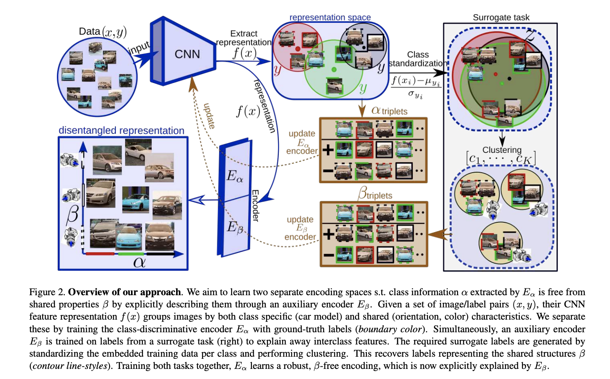
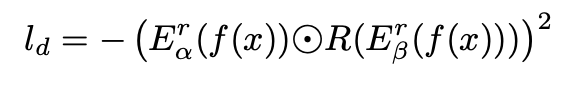

ICCV2019一篇关于Metric Learning的论文，Metric Learning相关的工作是在做特征表示相关的内容，这篇论文的出发点是从object特征中去除非特征主体的特征从而能对于后续的任务更好的学习。论文不是很好懂需要仔细琢磨。

对于一般的分类任务我们通常会把特征分成inter-class类间特征、intra-class类内特征, 那么这篇论文中类似，inter-class特征可以解释为区分特征主体的特征，比如区分狗和猫，intra-class特征可以解释为通用的一些特征，比如光照、角度等。对于一般的分类模型通常会忽略intra-class的特征直接用gt label来监督模型训练强行区分不同的类别。
那么本论文主要想细分这两个特征从而更精确的分类，假设输入图为img，f为抽特征的CNN，那么img的特征可以表示为f(img), 对于一般的metric learning通常会用一个encoder E在f(img)的基础上进一步对特征进行映射，从而基于E(f(img))做进一步的处理，比如计算相似度等，这个E的输出也可以理解为对这个img在高维特征空间的embedding。
类别一般的metric learning，本论文有两个encoder， encoder Eα 编码inter-class特征，这个学习很容易，直接用gt的label监督就好，另一个encoder Eβ 编码intra-class特征，这部分不是很容易学习因为没有gt.那么论文中是怎么做的呢？
- 首先对于类别n的所有的图片，计算每一张图的img的f(img)特征值，f通常是在ImageNet上pretrain过的某个model
- 计算所有f(imgi)的mean和standard deviation（标准差）
- 最后利用公式Zi = (f(imgi) - meann) / StandardDeviationn进行特征转化
这样做的目的是因为即使多张图片具体相同的intra-class特征，但是由于拍摄地点、拍摄行为等因素还是会导致不太一样，所以通过一个基本的转化得到的Z集合一定程度上消除了这种bias。
那么所有的图片经过上述的处理之后对于特征集合Z就可以聚类了，假设可以聚成K类{C1……Ck},那么C集合就可以作为Eβ训练的label了！你可以把C集合想像成角度、光照、遮挡等一系列属性。
因为Eβ和Eα共享f并且end2end训练，所以两者之前会相互影响，两者学习的特征也难免会有overlap，那么为了限制两者分别去学习inter-class类间特征和intra-class类内特征，作者也做了一些优化（ Minimizing Mutual Information）。具体可以参考下面这个公式，R是一个小网络用来将Eβ编码的信息映射到Eα的空间上，⊙就是普通的element wise乘，r代表梯度反转，是对抗学习中常用的一种方式，和实际的需求也比较接近：
